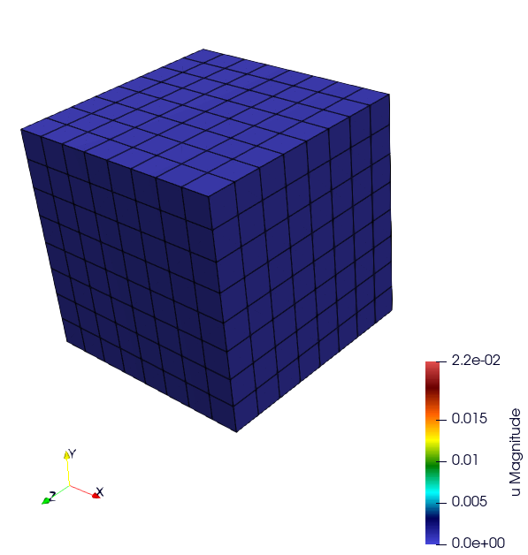
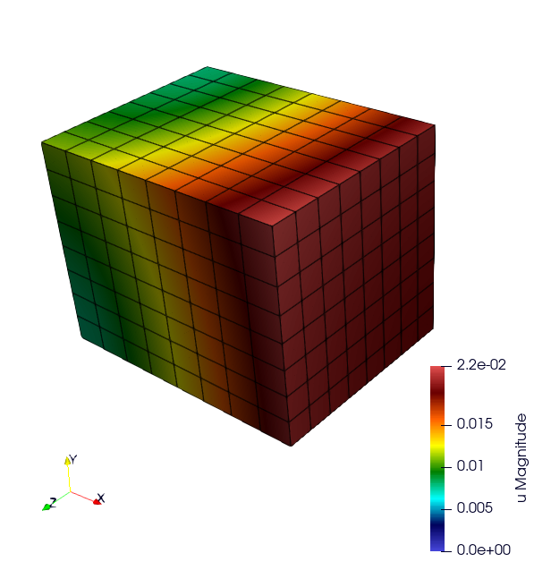
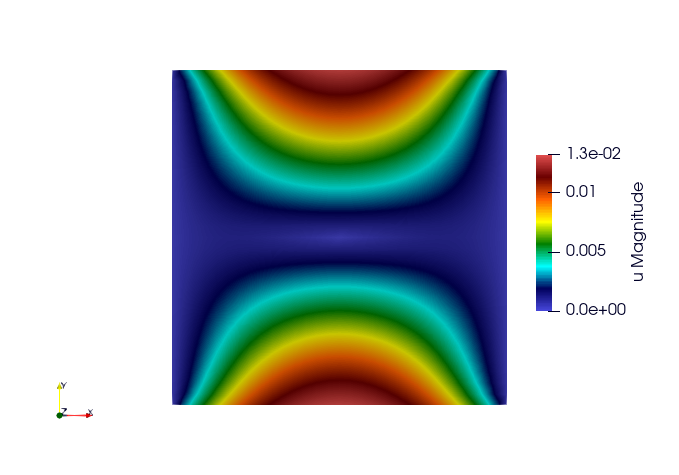
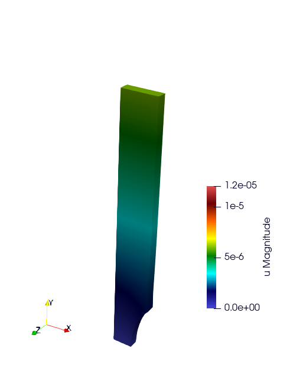
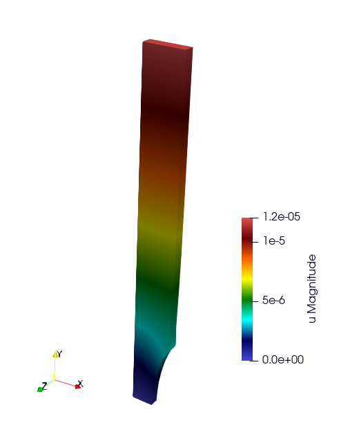

Basic Tests
TensileTest
website : https://github.com/latug0/mfem-mgis-examples/tree/master/ex1
Description:


Warning
Complete the description
Problem Solved
Export the internal value named plasticity strain
Solver : Conjugate Gradient (default)
Preconditioner : Depends on the solver
The default is plasticity; behaviour law parameters are defined in the loaded library.
Element:
- Family H1
- Order 1
Run This Simulation
mpirun -n 10 ./UniaxialTensileTestEx -m cube.mesh -l src/libBehaviour.so -b Plasticity -r Plasticity.ref -ls 1 -p 1 -v EquivalentPlasticStrain
Available options
To customize the simulation, several options are available, as detailed below.
Command line |
Description |
|---|---|
–mesh or -m |
Specify the mesh “.msh” used (default = inclusion.msh) |
–refinement or -r |
The reference file (default = Plasticity.ref) |
–behaviour or -b |
Name of the behaviour law (default = Plasticity) |
–internal-state-variable or -v |
Internal variable name to be post-processed (default = EquivalentPlasticStrain) |
–library or -l |
Material library (default = src/libBehaviour.so) |
–linearsolver or -ls |
Identifier of the linear solver: 0 -> CG, 1 -> GMRES, 2 -> UMFPack (serial), 3-> MUMPS(serial), 2 -> HypreFGMRES (//), 3 -> HyprePCG (//), 4 -> HypreGMRES (//). |
–order or -o |
Finite element order (polynomial degree) (default = 2) |
–parallel or -p |
Run parallel execution (default = 0, serial) |
Satoh
website: https://github.com/latug0/mfem-mgis-examples/tree/master/ex5
Description:
Modelling of a plate of length 1, in plane strain, clamped on the left and right boundaries and subjected to a parabolic thermal gradient along the x-axis. (source code 5)

Problem solved
This test models a 2D plate of length 1 in plane strain clamped on the left
and right boundaries and subjected to a parabolic thermal gradient along the
x-axis:
- the temperature profile is minimal on the left and right boundaries
- the temperature profile is maximal for x = 0.5
This example shows how to define an external state variable using an
analytical profile.
Solver : UMFPackSolver
Preconditioner : None
Elastic behavior law parameters :
[ parameters , material ]
[ Young Modulus , 150e9 ];
[ Poisson Ratio , 0.3 ];
[ Temperature , 293.15 ];
Element:
- Family H1
- Order 2
Run the simulation
Parameters are hardcoded in this example.
./SatohTest
Note
If you want to run this example in parallel, you’ll have to change the solver too.
Ssna303 Example (2D and 3D)
This tutorial deals with a 2D (plane strain) tensile test (ex2) and 3D (ex4) on a notched beam modeled by finite-strain plastic behavior. See the tutorial section.
website 2D example: https://github.com/latug0/mfem-mgis-examples/tree/master/ex2
website 3D example : https://github.com/latug0/mfem-mgis-examples/tree/master/ex4

